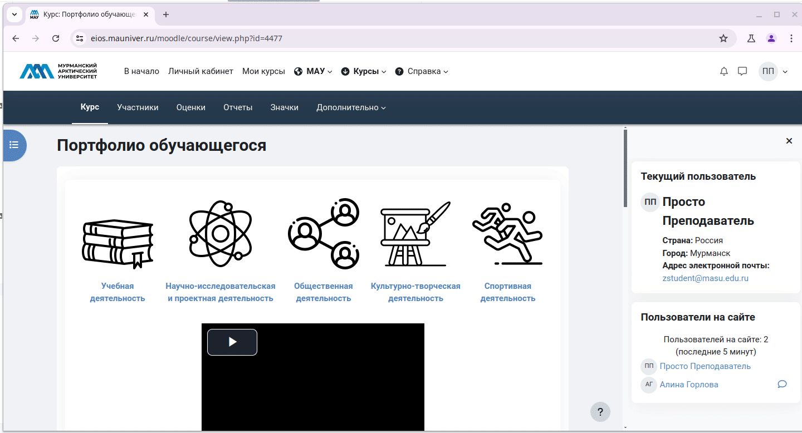

Специалисту по СВР
Специалист по СВР обладает по сравнению с обучающимися и кураторами расширенными привилегиями. Кроме привилегий на добавление учащихся и кураторов в группы специалист по СВР обладает возможностями самостоятельного создания групп и их удаления. В связи с этим специалист по СВР должен внимательно следить за выполняемыми им операциями в электронном портфолио обучающегося. Специалист по СВР не должен выполнять каких-либо операций вне своего факультета/института.
1. Возможности
- Просмотр количества участников в каждой группе.
- Экспорт результатов достижений для каждого из разделов портфолио.
- Управление студентами и кураторами.
2. Доступ к портфолио
- В начале учебного года деканат/директорат факультета/института направляют на адрес ЭИОС "МАУ" письмо с указанием полного ФИО ответственного по СВР.
Дополнительно могут быть указаны иные сотрудники деканата/директората для получения полномочий Ответственного по СВР
- Управление ИТ добавляет указанного ответственного по СВР в глобальную группу "Ответственные по СВР" и выполняет синхронизацию с портфолио.
- Ответственный по СВР получает расширенные возможности в портфолио обучающегося
flowchart LR
dean("`**Деканат/Директорат**:
письмо с указанием ФИО ответственного по СВР`")
dep_it("`**Управление ИТ**:
добавление указанного сотрудника в глобальную группу,
синхронизация с портфолио`")
teacher_svr("`**Ответственный по СВР**:
работает с портфолио`")
dean-->dep_it
dep_it-->teacher_svr
3. Просмотр достижений обучающихся академической группы
- Перейдите на страницу портфолио Сервисы | Вход в ЭИОС МАУ | Личный кабинет | Портфолио (при необходимости введите свой логин и пароль).
- Перейдите в один из разделов портфолио, например в раздел Учебная деятельность. При этом вам будет доступны для просмотра достижения всех обучающихся университета.
- Выберите в списке Изолированные группы интересующую вас академическую группу, например ИПиП-БСО-ЛГП-20
- При наличии загруженных обучающимися достижения внизу отобразится таблица с печенем достижений.
-
Отобразивушуюся таблицу можно прокручивать:
- по вертикали с помощью колеса прокрутки манипулятора мышь.
- по горизонтали с помощью клавиш управления курсором на клавиатуре Left Right
-
В последнем столбце Управление доступны кнопки с помощью которых можно:
- отредактировать запись
- просмотреть
- удалить
- отклонить

4. Добавления куратора в группу
- Перейдите в на страницу портфолио.
- Откройте раздел управления участниками с помощью кнопки Участники в верхней части страницы.
- В списке Зачисленные на курс пользователи выберите Группы для перехода в одноимённый раздел.
- Найдите в списке Группы ту, в которую требуется добавить куратора и щелкните по ней для активации.
- Откройте диалоговое окно добавления пользователя в группу с помощью кнопки Добавить/удалить участника.
- Начните вводить в поле Найти фамилию куратора и выберите его, щелкнув по его фамилии в списке Возможные участники.
- Добавьте выбранного куратора с помощью кнопки Добавить (с помощью кнопки Удалить можно исключить куратора из группы).

5. Просмотр состава групп для факультета/института
- Перейдите в на страницу портфолио.
- Откройте раздел управления участниками с помощью кнопки Участники в верхней части страницы.
- В списке Зачисленные на курс пользователи выберите Обзор для перехода в одноимённый раздел.
- Выполните фильтрацию информации только для вашего факультета/института с помощью списка Фильтр групп по...
- С помощью спика Группа можно просмотреть состав одной группы.

6. Просмотр наполняемости портфолио
- Перейдите в на страницу портфолио.
- Пролистайте страницу вниз до пункта Статистика по портфолио для кураторов и перейдите в него
- Выберите в раскрывающемся списке факультет/институт при этом отобразится список групп с дополнительной информацией по каждой из них:
- куратор (если он был добавлен в группу)
- добавлено достижений: 0 (добавленные обучающимися достижения)
- проверено: 0 (количество одобренных куратором достижений)

7. Экспорт результатов достижений для каждого из разделов портфолио
- В портфолио обучающегося перейдите в один из его разделов, например Научно-исследовательская и проектная деятельность.
- Перейдите в подраздел Экспортировать.
- Выберите интересующую вас академическую группу в списке Изолированные группы.
- Укажите формат экспорта.
- Выберите поля данных для экспорта.
- Осуществите экспорт данных кнопкой Экспорт записей.
- После этого у вас произойдет скачивание файла табличного процессора, который можно открыть в LibreOffice Calc или Microsoft Office Excel и выполнить самостоятельно анализ.